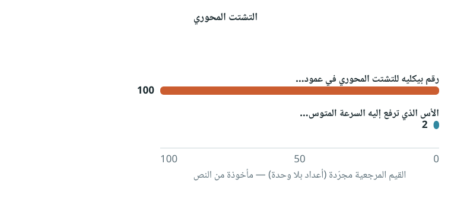

التشتت المحوري
Axial dispersion
انتشار إضافي للعناصر على طول اتجاه التدفق فوق ما يسببه الانتشار الجزيئي وحده، ينشأ من اختلاف السرعة على المقطع ومن تعرّج المسارات، ويُوصف بمعامل تشتت فعّال.
التشتت المحوري هو اتساع سحابة مادة مذابة أو معلّقة على طول اتجاه التدفق بمقدار يتجاوز ما يفسره الانتشار الجزيئي وحده. سببه أن السائل لا يجري بسرعة واحدة على مقطع الأنبوب أو العمود: الطبقات القريبة من الجدار أبطأ من القلب، والمسارات بين الحبيبات متفاوتة الطول، فتتقدّم بعض العناصر على بعض. ويُوصف هذا الأثر بمعامل تشتت فعّال يُضاف إلى معامل الانتشار الجزيئي في معادلة الانتقال، فيصبح مجموع المعاملين هو الذي يحدد اتساع السحابة. وقد بيّن تايلور أن التشتت في أنبوب رقيق يتناسب مع مربع السرعة ومربع نصف القطر ومقلوب معامل الانتشار الجزيئي، فكلما ضاق الأنبوب أو زادت سرعته اتسعت السحابة أسرع. وفي الأعمدة ذات الحشو يُعبَّر عن التشتت برقم بيكليه يعتمد على قطر الحبيبة والسرعة الظاهرية، ويُستعمل هذا الرقم في تصميم المفاعلات والممتزات لتقدير مقدار التبديد الذي يفسد الأداء المتوقع من النموذج المثالي.
كيف تعمل الظاهرة؟
التشتت المحوري يبدأ من تفاوت السرعة على المقطع: السائل في القلب أسرع من السائل قرب الجدار، فالعناصر التي في القلب تتقدم، ثم يعيد الانتشار الجزيئي توزيعها شعاعياً فتنتقل إلى طبقة أبطأ، فيتكرر التبادل ويتراكم التقدم على شكل اتساع تدريجي. هذا التفاعل بين تفاوت السرعة والانتشار الشعاعي هو جوهر تحليل تايلور: التشتت ليس متوسطاً للسرعات بل نتيجة تبادل متكرر بين الانتقال الطولي والانتقال الشعاعي، ولهذا يعتمد على معامل الانتشار الجزيئي اعتماداً عكسياً.
العلاقة بالأرقام
يُعبَّر عن التشتت برقم بيكليه لابعدي يساوي السرعة الظاهرية مضروبة في طول مرجعي ومقسومة على معامل التشتت. في المثال: سرعة ظاهرية 0.20 m/s وطول مرجعي 0.50 m ومعامل تشتت 0.001 m²/s تعطي رقم بيكليه 100. وكلما كبر هذا الرقم اقترب السلوك من الانسياب الأنبوبي المثالي، وكلما صغر زاد التبديد واقترب السلوك من الخلط. وفي علاقة تايلور للأنبوب الرقيق يتناسب معامل التشتت مع مربع السرعة المتوسطة ومربع نصف القطر ومقلوب معامل الانتشار الجزيئي.
مفاهيم متقاربة
التشتت المحوري ليس خلطاً كاملاً ولا انسياباً أنبوبياً، بل بينهما: يوسّع السحابة بمقدار محدود يمكن حسابه. ويُفصل عن الانتشار الجزيئي بأنه يعتمد على السرعة اعتماداً قوياً بينما ذاك لا يعتمد عليها. ويُفصل عن التشتت الشعاعي الذي يعمل على المقطع ويعيد توزيع المادة بين الطبقات، وهو في تحليل تايلور سبب لا نتيجة. ويُفصل عن التشتت الميكانيكي في الأوساط المسامية الذي ينشأ من تعرّج المسارات بين الحبيبات، فهو أحد مكوّني التشتت الكلي هناك لا مرادفه.
حدود التطبيق
تحليل تايلور صالح لأنابيب رقيقة وسرعات منخفضة بحيث يكون زمن الانتشار الشعاعي أقصر بكثير من زمن المكوث، وإلا لم يكتمل التبادل بين الطبقات واختلف الشكل عن التوزيع الجرسي. وفي الأعمدة ذات الحشو يتغير معامل التشتت مع رقم رينولدز على مراحل، فالقيم المأخوذة من ارتباط واحد لا تُعمَّم على مدى واسع. ولا يعني وجود تشتت أن النموذج الحبيبي بلا فائدة، بل يعني أن رقم بيكليه يجب أن يُعلن مع أي تنبؤ بالتحويل أو باختراق الممتز.

| الكمية | القيمة | المصدر |
|---|---|---|
| رقم بيكليه للتشتت المحوري في عمود حشو عند سرعة ظاهرية 0.20 m/s | 100 — | [2] |
| معامل التشتت المحوري المستخدم في المثال | 0.001 m²/s | [3] |
| الأس الذي ترفع إليه السرعة المتوسطة في علاقة تايلور للأنبوب الرقيق | 2 — | [1] |
المصادر
- 1 Dispersion of soluble matter in solvent flowing slowly through a tube — G. I. Taylor — The Royal Society (Proceedings A) (1953). doi.org/10.1098/rspa.1953.0139 · اطُّلع عليه 2026-11-28
- 2 Axial and radial dispersion in fixed beds — D. J. Gunn — Elsevier (Chemical Engineering Science) (1987). doi.org/10.1016/0009-2509(87)85066-2 · اطُّلع عليه 2026-11-28
- 3 A critical review of dispersion in packed beds — J. M. P. Q. Delgado — Springer (Heat and Mass Transfer) (2005). doi.org/10.1007/s00231-005-0019-0 · اطُّلع عليه 2026-11-28
استشهد بهذا المصطلح
الصيغتان مبنيتان من بيانات الصفحة نفسها: العنوان والتاريخ ورابط النسخة المنشورة.
التشتت المحوري — Axial dispersion. (2026). ديوان المعرفة — انفراد. https://infiradev.com/diwan/terms/term-axial-dispersion.html
@misc{term-axial-dispersion2026,
title = {التشتت المحوري},
titleaddon = {Axial dispersion},
howpublished = {{ديوان المعرفة — انفراد} — مرجع علمي عربي},
year = {2026},
url = {https://infiradev.com/diwan/terms/term-axial-dispersion.html},
urldate = {2026-11-28},
note = {مراجعة علمية: Abdullah Al-Huwaidi}
}
راجعه: Abdullah Al-Huwaidi · 2026-11-28 · آخر تحديث 2026-11-28